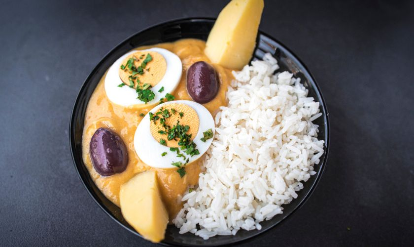
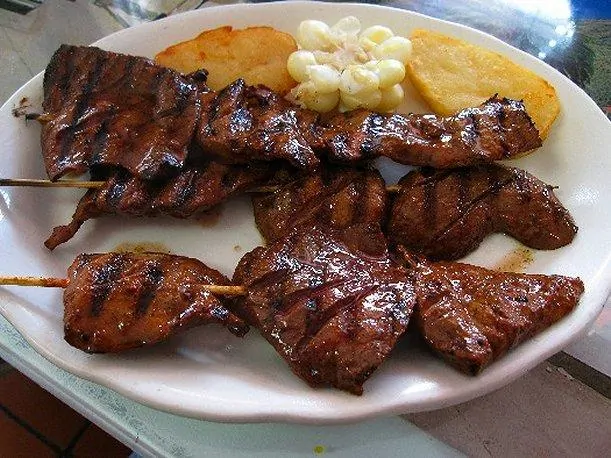
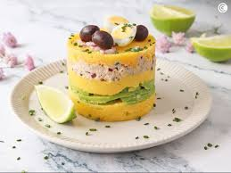

Popular
Menu
En nuestro restaurante celebramos la riqueza de la gastronomía peruana, ofreciendo platos criollos preparados con ingredientes frescos y recetas tradicionales. Cada preparación refleja el auténtico sabor del Perú.
Ver nuestra Carta